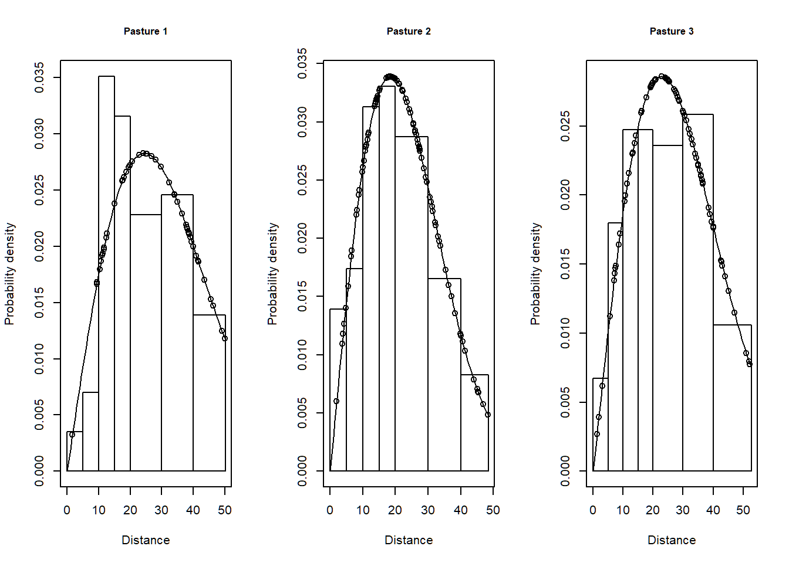

Stratification
In this exercise, we use R (R Core Team 2019) and the Distance package (Miller 2017, Miller et al. 2019) to fit different detection function models to line transect survey data of savanna sparrows (Passerculus sandwichensis) density and abundance. These data were part of a study examining the effect of livestock grazing upon vegetation structure and consequently upon the avian community described by Knopf et al. (1988).
1 Objectives
- Fit a detection function pooling data across pastures,
- Fit pasture-specific detection functions,
- Choose most appropriate analysis using model selection.
2 Survey design
A total of 373 point transects were placed in three pastures in the Arapaho National Wildlife Refuge in Colorado. Elevation of these pastures was ~2500m. In this vignette we will perform pasture-level analysis of these data.

Summer grazed pastures along Illinois River Arapaho National Wildlife Refuge, Colorado. Figure from Knopf et al. (1988).
The fields of the Savannah_sparrow_1980 data set are:
- Region.Label - three pastures that constituted sections of the study area.
- Area - size of the study region. A place holder, because pasture sizes are not known. Estimates of density and abundance will be equivalent.
- Sample.Label - point transect identifier (total of 273)
- Effort - number of visits to each point
- object - unique identifier for each detected savanna sparrow
- distance - radial distance (metres) to each detection
- Study.Area - only data for savanna sparrow (SASP) are included in this data set
3 Make the data available for R session
This command assumes that the dsdata package has been installed on your computer. The R workspace Savannah_sparrow_1980 contains detections of savanna sparrows from point transect surveys of Knopf et al. (1988).
library(Distance)
data(Savannah_sparrow_1980)
conversion.factor <- convert_units("meter", NULL, "hectare")4 Separate data into pasture-specific data sets
The simplest way to fit pasture-specific detection functions is to subset the data. This could be done at the time the ds() function is called, but we perform the step here as a data preparation step.
sasp.past1 <- subset(Savannah_sparrow_1980, Region.Label == "PASTURE 1")
sasp.past2 <- subset(Savannah_sparrow_1980, Region.Label == "PASTURE 2")
sasp.past3 <- subset(Savannah_sparrow_1980, Region.Label == "PASTURE 3")5 Pasture (stratum)-specific detection functions
Fit half-normal key functions without adjustments to each pasture separately after performing 5% right truncation.
past1.hn <- ds(data=sasp.past1, key="hn", adjustment=NULL,
transect="point", convert.units=conversion.factor, truncation="5%")
past2.hn <- ds(data=sasp.past2, key="hn", adjustment=NULL,
transect="point", convert.units=conversion.factor, truncation="5%")
past3.hn <- ds(data=sasp.past3, key="hn", adjustment=NULL,
transect="point", convert.units=conversion.factor, truncation="5%")The total AIC for the model that fits separate detection functions to each pasture is the sum of the AICs for the individual pastures.
model.separate.AIC <- sum(AIC(past1.hn, past2.hn, past3.hn)$AIC) 6 Common detection function across pastures
This model is much simpler to fit because there is only a single call to ds() using the original data.
model.pooled <- ds(data=Savannah_sparrow_1980, key="hn", adjustment=NULL,
transect="point", convert.units = conversion.factor, truncation = "5%")
model.pooled.AIC <- AIC(model.pooled)7 Which is the preferred model?
Contrast the AIC scores of the two models and select the model with the smallest AIC score.
cutpoints <- c(0,5,10,15,20,30,40,53)
par(mfrow=c(1,3))
plot(past1.hn, breaks=cutpoints, pdf=TRUE, main="Pasture 1")
plot(past2.hn, breaks=cutpoints, pdf=TRUE, main="Pasture 2")
plot(past3.hn, breaks=cutpoints, pdf=TRUE, main="Pasture 3")
par(mfrow=c(1,1))7.1 Absolute goodness of fit
Always best to check the fit of the preferred model to the data.
gof_ds(past1.hn, plot = FALSE)
gof_ds(past2.hn, plot = FALSE)
gof_ds(past3.hn, plot = FALSE)Further exploration of analyses involving stratification can be found in the Multipliers vignette.
8 References
Knopf, F.L., J.A. Sedgwick, and R.W. Cannon. (1988) Guild structure of a riparian avifauna relative to seasonal cattle grazing. The Journal of Wildlife Management 52(2): 280–290. https://doi.org/10.2307/3801235.
Miller DL (2017) Distance: Distance Sampling Detection Function and Abundance Estimation. R package version 0.9.7. should be 0.9.9 but not on CRAN https://CRAN.R-project.org/package=Distance
Miller DL, Rexstad E, Thomas L, Marshall L, Laake JL (2019) Distance Sampling in R. Journal of Statistical Software 89(1), 1-28. doi:10.18637/jss.v089.i01 http://doi.org/10.18637/jss.v089.i01.
R Core Team (2018) R: A language and environment for statistical computing. R Foundation for Statistical Computing, Vienna, Austria. https://www.R-project.org/
Stratified analysis of Arapaho National Wildlife Refuge Savannah sparrow density
library(Distance)
data(Savannah_sparrow_1980)
sasp.past1 <- subset(Savannah_sparrow_1980, Region.Label == "PASTURE 1")
sasp.past2 <- subset(Savannah_sparrow_1980, Region.Label == "PASTURE 2")
sasp.past3 <- subset(Savannah_sparrow_1980, Region.Label == "PASTURE 3")
conversion.factor <- convert_units("meter", NULL, "hectare")
past1.hn <- ds(data=sasp.past1, key="hn", adjustment=NULL,
transect="point", convert.units=conversion.factor, truncation="5%")
past2.hn <- ds(data=sasp.past2, key="hn", adjustment=NULL,
transect="point", convert.units=conversion.factor, truncation="5%")
past3.hn <- ds(data=sasp.past3, key="hn", adjustment=NULL,
transect="point", convert.units=conversion.factor, truncation="5%")
model.separate.AIC <- sum(AIC(past1.hn, past2.hn, past3.hn)$AIC)
model.pooled <- ds(data=Savannah_sparrow_1980, key="hn", adjustment=NULL,
transect="point", convert.units = conversion.factor, truncation = "5%")
model.pooled.AIC <- AIC(model.pooled)$AIC
print(paste("AIC stratum-specific=", round(model.separate.AIC), 1))## [1] "AIC stratum-specific= 2007 1"print(paste("AIC pooled detfn=", round(model.pooled.AIC),1))## [1] "AIC pooled detfn= 2022 1"cutpoints <- c(0,5,10,15,20,30,40,53)
par(mfrow=c(1,3))
plot(past1.hn, breaks=cutpoints, pdf=TRUE, main="Pasture 1")
plot(past2.hn, breaks=cutpoints, pdf=TRUE, main="Pasture 2")
plot(past3.hn, breaks=cutpoints, pdf=TRUE, main="Pasture 3")
par(mfrow=c(1,1))
gof_ds(past1.hn, plot = FALSE)##
## Goodness of fit results for ddf object
##
## Distance sampling Cramer-von Mises test (unweighted)
## Test statistic = 0.0939637 p-value = 0.615284gof_ds(past2.hn, plot = FALSE)##
## Goodness of fit results for ddf object
##
## Distance sampling Cramer-von Mises test (unweighted)
## Test statistic = 0.0478569 p-value = 0.889167gof_ds(past3.hn, plot = FALSE)##
## Goodness of fit results for ddf object
##
## Distance sampling Cramer-von Mises test (unweighted)
## Test statistic = 0.0402974 p-value = 0.9316098 Notes regarding the stratification of Savannah sparrow point transect data
Note there is a difference of roughly 14 AIC units between the model using stratum-specific detection functions and the model using a pooled detection function, with the stratum-specific detection function model being preferrable. To be thorough, absolute goodness of fit for the three stratum-specific detection functions is checked, and all models fit the data adequately.
This vignette focuses upon use of stratum-specific detection functions as a model selection exercise. Consequently, the vignette does not examine stratum-specific abundance or density estimates. That output is not provided.